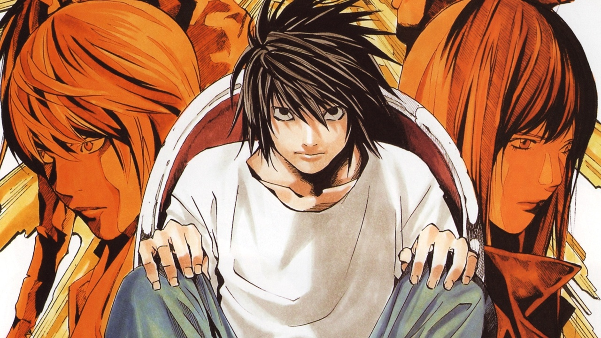
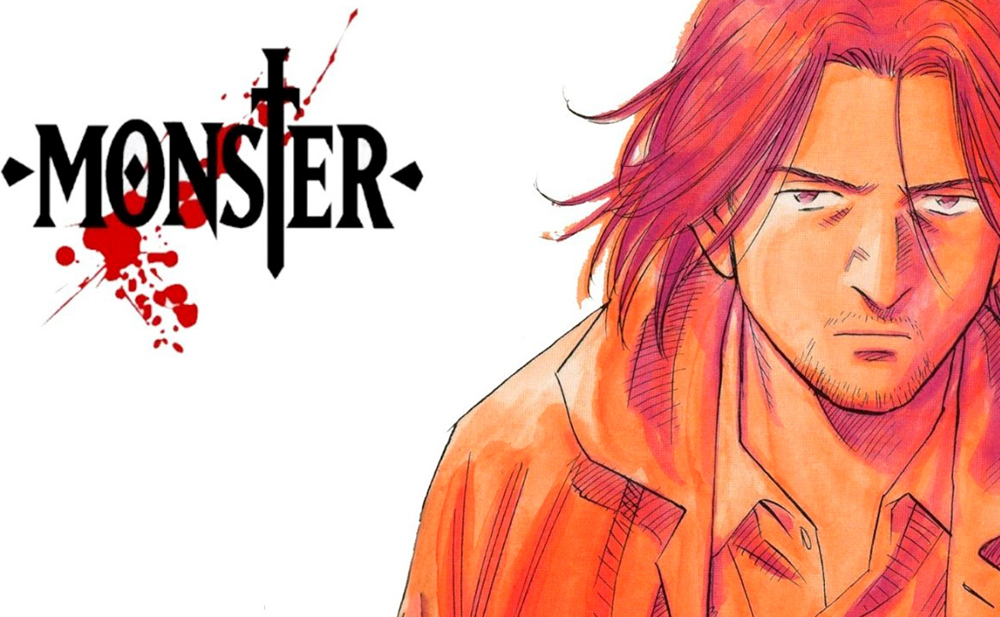
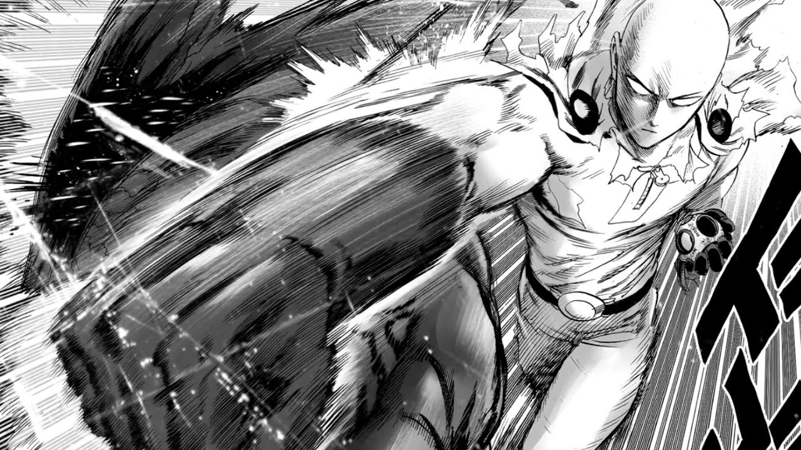

Berserk es una obra maestra del manga que cuenta la historia épica de Guts, un guerrero solitario que busca venganza contra su antiguo amigo Griffith, y que se enfrenta a demonios y criaturas horripilantes en el camino. El dibujo detallado y oscuro, junto con la narrativa llena de acción, emoción y tragedia, crea una atmósfera única e inolvidable. Aunque es conocido por su violencia y temas oscuros, la historia también ofrece momentos de esperanza y redención. Si te gusta la fantasía oscura y la narrativa épica, Berserk es una obra que no te puedes perder.
Arte de Kentaro Miura
Death Note es un manga emocionante y lleno de suspenso que sigue a Light Yagami, un joven genio que encuentra un misterioso cuaderno que le da el poder de matar a cualquiera cuyo nombre escriba en él. La historia se desarrolla en una emocionante carrera de ingenio entre Light y el brillante detective L, que intenta atraparlo. Con giros sorprendentes y personajes intrigantes, Death Note es una obra que mantiene a los lectores al borde de sus asientos hasta el final. Si te gustan las historias de suspenso y acción, Death Note es un manga que no te puedes perder.
Arte de Kentaro Miura
Monster es un manga emocionante y psicológico que sigue al cirujano brillante y exitoso, Kenzo Tenma, que se ve envuelto en una conspiración mortal después de salvar la vida de un niño que se convierte en un asesino en serie años después. La historia se desarrolla en una búsqueda intensa de Tenma para detener al asesino y limpiar su propio nombre, y explora temas oscuros como la naturaleza humana y la ética médica. Con personajes complejos y una trama llena de giros, Monster es un manga que te mantendrá en vilo hasta el final. Si te gustan los dramas psicológicos y los misterios oscuros, Monster es un manga que no te puedes perder.
Arte de Naoki Urasawa
One Punch Man es un manga de superhéroes que cuenta la historia de Saitama, un héroe aburrido que es tan poderoso que puede derrotar a cualquier enemigo con un solo golpe. La historia se desarrolla en una serie de batallas emocionantes y llenas de acción mientras Saitama se une a otros héroes en su lucha contra monstruos y villanos cada vez más fuertes. Con un sentido del humor único y una animación espectacular, One Punch Man es un manga que te hará reír, emocionarte y asombrarte en cada página. Si te gustan las historias de superhéroes y la comedia, One Punch Man es un manga que no te puedes perder.
Arte de Yusuke Murata
Vagabond es un manga épico que se basa en la vida del legendario espadachín Miyamoto Musashi, un samurái del siglo XVII que se convirtió en uno de los espadachines más habilidosos de la historia de Japón. La historia sigue a Musashi en su búsqueda de la perfección en el camino de la espada, mientras se enfrenta a una variedad de enemigos y desafíos tanto físicos como mentales. Con una animación impresionante y una narrativa profunda, Vagabond es una obra maestra del manga que explora temas como la filosofía, la ética y la espiritualidad, además de la acción y el drama emocionante. Si te gustan los mangas históricos y las historias de samuráis, Vagabond es una obra que no te puedes perder.
.png)
Arte de Takehiko Inoue